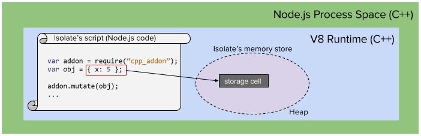
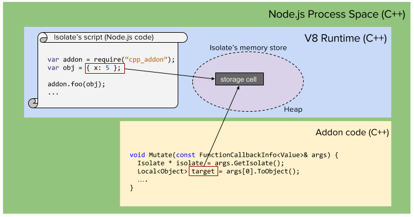

In Chapter 1 we learned just enough of the V8 API to be dangerous - which is not where we want to be! In order to make use of the V8 documentation online, you'll need to have a fundamental grasp of how the system works. To really start developing powerful addons to serve all of your use cases, you'll need to learn the details of the memory management and data type facilities V8 provides. These topics are the focus of this chapter. This chapter serves as the foundation of the next few chapters as well, which will show you how to deal with arrays and objects. The topics in this chapter also play a critical role in understanding how asynchronous addons function, as we'll highlight the different ways we can allocate data in C++ through V8.
The key to understanding V8 data types - and how we use them inside our C++ addons - is to understand how V8 stores the memory associated with the variables JavaScript code creates. A few key points are worth remembering, especially if you are relatively new to Node.js:
Local vs. Persistent handles later in this chapter!The take-away here is that there is a huge difference between a variable your C++ code creates in standard fashion (double x) and a V8::Number. The double is getting created on the stack (or heap) of the C++ program (essentially, Node.js), while the V8::Number is a C++ object which contains a reference to a storage cell, managed entirely by the V8 runtime (and of course, stored on the C++ program's heap as well).
Before tackling how actual memory is allocated and accessed, let's investigate the idea of isolates a bit further than we did in Chapter 1 - as references to isolates are virtually everywhere in the V8 API. An Isolate is an independent instance of the V8 runtime - complete with execution context (control flow), memory management/garbage collection, etc. A C++ program can create multiple Isolate objects in order to provide multiple, parallel, and isolated execution environments for scripts to run. Most importantly, each Isolate contains it's own heap - it's own pool of memory from which storage cells for the variables created by the JavaScript executing within it.
Node.js creates a single Isolate, and there is no API for creating additional ones via JavaScript (not sure if that even makes sense!). If you were embedding V8 in your own C++ application, only then would creating multiple Isolate objects be possible. Isolates have an important role in the limitations placed on multi-threaded code. There is a strict single thread rule for a given Isolate - meaning only one thread is allowed to access an Isolate and it's resources at a given time. In the Node.js environment, this thread is already spoken for (it's the event-loop, your JavaScript code - or the C++ called from it) - accessing Isolate resources from other C++ threads is impossible[1].
If you were embedding V8 in your own C++, you could access a single Isolate using multiple threads. You'd need to perform synchronization to ensure no two threads accessed the Isolate simultaneously however. This synchronization must be done through V8's Locker and Unlocker classes. V8 enforces this rule strictly - if you try get around it, you'll take an unexpected detour to segmentation fault city - regardless of if an actual race conditions exits or not.
The threading rules associated with Isolate objects is critical to understanding the limitations of C++ addons and multi-threading - which will be discussed in further detail towards the end of this chapter, and in Chapter 4.
While an Isolate encapsulates an execution environment and heap, it does not fully provide the requirements for running JavaScript code. The running of JavaScript requires a global object. The global object will have properties attached to it such as Infinity, undefined, NAN, and null. It has functions associated with it - like eval, isNan, parseFloat, etc. It also contains the Objects we are familiar with (Object, Function, Boolean, etc). These are all defined in the EMCAScript standard.
A full execution environment also has a global scope - which will contain objects created by user scripts or provided by the host (in this context, the host is the C++ program instantiating V8). In the browser world, globally scoped objects would include window, document, alert, setTimeout(), etc. Node.js provides global objects/function such as console, exports, module, process, require(),. A complete list can be found at https://nodejs.org/api/globals.html.
V8 represents the "global" idea as a V8::Context. A Context object corresponds to a global object in the Isolate's heap. An Isolate may have any number of Contexts active, each operating with their own independent globals. In a web browser, the C++ browser code will create separate Context objects for each tab - as each tab's JavaScript should execute independently. Any changes to objects in the global space of one tab would not affect another's (such as changing window.location or document!).
In Node.js, we typically only have a single implicit Context. You can actually compile and execute JavaScript in new contexts through the vm object however. While sometimes useful, use cases for this functionality is relatively rare and won't be discussed much further in this book.
From this point forward, unless we must make the distinction in code, when we speak of an Isolate we are speaking of the isolate and the context created by Node.js. This single execution environment executes all of our Node.js JavaScript code, and will be accessed via the V8 API by our C++ addons when we need to allocate / read / or write to JavaScript memory.
Now let's look at JavaScript variables, from the perspective of Node.js and V8. When we create an object in JavaScript, var obj = {x : 5}; V8 dutifully creates a storage cell in the Isolate's heap - as shown in Figure 3.

Now let's take a look at how this particular variable could be accessed by a Node.js C++ addon. Aside from trivial use cases, addons will need to either accepts parameters sent from JavaScript or return data to JavaScript - and likely they will do both. Let's build a simple addon now that exposes a single method - mutate which accepts an object to change via a parameter:
void Mutate(const FunctionCallbackInfo<Value>& args) {
Isolate * isolate = args.GetIsolate();
Local<Object> target = args[0]->ToObject();
target->Set(
String::NewFromUtf8(isolate, "x"),
Number::New(isolate, 42));
}
In the code above, I've left out the necessary includes, initialization (NODE_SET_METHOD) and the text of the binding.gyp file - see Chapter 1 for details. The interesting stuff is happening in the Mutate function. When our Node.js code invokes Mutate, the Node.js runtime creates a FunctionCallbackInfo object and passes it to our function. On line 2, the first action is to obtain a reference to the current Isolate. This is the way we can begin to access anything within the running JavaScript program - without it we are limited to just normal C++ stack and heap variables.
On line 3, we obtain a Local handle to an object passed in as arg[0]. We'll cover type conversion in a moment (ToObject), but for now let's focus on the what exactly arg[0] is. V8 defines data types that correspond to JavaScript variables stored in storage cells - and since JavaScript defines many data types, the C++ V8 engine models this as a type hierarchy - with v8::Value at the top of the inheritance chain. arg[0] is of type v8::Value, which represents a reference into V8's storage cells to a particular cell where the first parameter is held.
In theory, we should be able to manipulate the underlying JavaScript object directly - yet the V8 API requires us to wrap this v8::Value in a handle instead. Recall that V8 is responsible for garbage collection - thus it is extremely concerned with knowing precisely how many references exist to storage cells within an isolate. A handle is an object that represents the existence of such a reference in C++ - as V8 not only needs to keep track of references to storage cells originating from JavaScript, but also in the addons JavaScript may invoke.

There are two types of handles - Local and Persistent. A Local handle is allocated on the C++ call stack, and wraps a given v8::Value. The creation of a Local implicitly invokes the Local's constructor - which in turn allows the necessary V8 bookkeeping to take place, ensuring V8 knows there is now a new outstanding reference to this particular storage cell.
Local handles are by far the most common type of handle we see in addon development. Once we have one, we may access and manipulate the underlying data it wraps - typically parameters sent into our addon. As we'll see below, we may also allocate new storage cells - typically for the purposes of returning references to them back to JavaScript. As is the case in any C++ function, when our addon function returns (back to Node.js/V8), the destructor of any Local handles created within the function is called - which will notify V8 that this particular reference to the storage cell is no longer valid.
Actually - while the above paragraph serves as a reasonable mental model of what is going on in typically Node.js addons - it's actually a bit more complicated than this... Local handle objects do not directly perform bookkeeping in their constructors and destructors - there is a level of indirection that goes unseen in synchronous addons, but is a critical part of V8. The indirection is that Local handles are associated with a HandleScope object - which is a container for bunches of Local handles.
At a given time, there (must) always be one HandleScope object active within a given isolate. Whenever Local handles are created, they are added to the currently active HandleScope object. Each new HandleScope that is created automatically becomes "active" and all Local handles created afterwards will be associated with it. When a HandleScope is deleted, the previously active HandleScope is made active. It is only when the HandleScope object's destructor is called that storage cells referenced by the contained handles are considered eligible for garbage collection (assuming no other handles or JavaScript references point to them).
At the time of this writing, HandleScope objects are front and center Google's V8 Embedder's Guide - however for a simple synchronous Node.js addon - the concept is never used, which leaves many a bit confused. To resolve the confusion, we must again remember that JavaScript most definitely does not call our addon function directly. When JavaScript code invokes an addon - its Node.js (C++) that will actually take the V8 objects associated with parameters and package them up into the FunctionCallbackInfo and call your addon. It is here, before your C++ addon function is called, that a HandleScope is created. This means that for C++ addon functions called from JavaScript, it is not mandatory to create a new HandleScope (although you may, if you wish). As will be described when we discuss asynchronous callbacks - C++ code that is going to use V8 but is not directly called by JavaScript will need to create a HandleScope of it's own however.
I'm going to defer discussing HandleScopes much further, and save more of the discussion for when we cover asynchronous callbacks and are forced to deal with the issue. For now, we can simply remember that when our C++ addon is invoked, any local handle it creates will implicitly be associated with a HandleScope already created - which will be deleted when we return back to JavaScript.
Now that we have a bit of an understanding of handles, and how they allow us to interact with storage cells - let's look at what sort of storage cells we can actually work with. This means taking a look at what data types V8 supports - which unsurprisingly match right up with JavaScript data types!
Rather than simply listing out data types (I assume you know what a string is!), let's look at these data types from the context of being passed in as arguments to a C++ addon and returning modified values back to C++. All of the code for this chapter is available in full in the nodecpp-demo repository at https://github.com/freezer333/nodecpp-demo, under the "Conversions" section.
JavaScript primitives include Strings, Numbers, and Booleans - along with null and undefined. V8 uses an inheritance hierarchy in which Primitive extends Value, and all the individual primitives subclass Primitive. In addition to the standard JavaScript primitives, V8 also supports integers (Int32 and Uint32).
JavaScript has a very flexible type casting system - i.e. using the string "42" as an number automatically converts it to a number primitive and using undefined as a string will result in it turning into the literal "undefined". This functionality, while foreign to a C++ developer, is fully supported by V8.
As we go through the API for working with primitives, you will notice that there is no facility for assignment - which at first may seem odd! In fact, it makes a lot of sense however - for three reasons:
var x = 5; makes x point to a storage cell with 5 in it - reassigning x = 6 does not change this storage cell (at least, in concept - the interpreter can "cheat") - it simply makes x point to another storage cell that contains 6. If x and y are both assigned the value of 10, they both point to the same storage cell. The same holds for strings and booleans.Hopefully that makes some sense - however it's still likely you'll need to modify V8 variables... we'll just need to do this by creating new ones and assigning the new value to them.
Now let's look at the common primitive types - Number, String, and Boolean. For each, we'll build an addon function that accepts a single primitive, transforms it in some way, and returns the transformed value. Along the way, we'll look at how V8 handles casting, the creation of new primitives, and how we can detect alternative conditions - such as when null, undefined, or an Object type is passed in.
Let's start with a simple conversion of a JavaScript number being passed into an addon function.
void PassNumber(const FunctionCallbackInfo<Value>& args) {
Isolate * isolate = args.GetIsolate();
Local<Number> target = args[0]->ToNumber();
double value = target->NumberValue();
// value is now OUTSIDE of V8 - we can use it in
// all the C++ standard ways.
}
On line 4 we convert the first argument passed to C++ into a number using the ToNumber method on v8::Value. Note here that the -> syntax is be used on Local<Value> objects to call methods on their underlying V8 data types - the Local object overloads the pointer dereferencing operator.
The first conversion to Local<Number> is actually unnecessary though - since the NumberValue function is actually (somewhat oddly[2]) defined on v8::Value. So the code below is perfectly equivalent:
void PassNumber(const FunctionCallbackInfo<Value>& args) {
Isolate * isolate = args.GetIsolate();
// We don't need to convert to `Local<Number>` explicitly...
double value = args[0]->NumberValue();
// value is now OUTSIDE of V8 - we can use it in
// all the C++ standard ways.
}
Now that we have a C++ value, we can modify it - perhaps by adding a fixed value to it. To return new value, we need to create a new storage cell and return a reference back to JavaScript.
Creating new V8 numbers is straightforward - it is accomplished using the static factory method New defined on v8::Number.
void PassNumber(const FunctionCallbackInfo<Value>& args) {
Isolate * isolate = args.GetIsolate();
double value = args[0]->NumberValue();
value+= 42;
Local<Number> retval = Number::New(isolate, value);
args.GetReturnValue().Set(retval);
}
Line 8 creates the storage cell (note that the isolate must be passed into the New method). We simultaneously assign the value as we allocate it - again, since primitives are immutable in JavaScript. Line 10 then returns it, using the standard method discussed in Chapter 1.
Calling from JavaScript results in the expected results for standard number values.
const addon = require('./build/Release/primitive');
var number_returned = addon.pass_number(23);
console.log(number_returned); // prints 65
var number_returned = addon.pass_number(0.5);
console.log(number_returned); // prints 42.5
Of course, there is no guarantee that the first argument is indeed a JavaScript number. Let's investigate what happens should we invoke this code in a variety of different use cases.
As a first check - what happens if a first argument isn't even specified?
var number_returned = addon.pass_number();
console.log(number_returned); // NAN!
We're getting our first glimpse of V8's ability to "do the JavaScript thing". If our addon was a normal JavaScript function, args[0] would be undefined. When used in a mathematical expression, undefined ends up giving you NAN - so we are returning NAN + 42. So... lesson learned: if you call NumberValue() on a Local<Value> that stores undefined, you get NAN.
Now is a good time to review how you could preemptively check for this though. First, FunctionCallbackInfo exposes an Length function that can let us catch situations where we don't have the arguments we expect. In addition, v8::Value has query functions defined on it so you can interrogate the value to determine it's underlying type. There is an IsArray, IsBoolean, IsDate, IsFunction, IsInt32, IsNull, IsNumber, IsObject... you get the idea! They all return boolean results. If you prefer to throw exceptions or return error values if you don't get the right parameters in your addon, you may certainly do so.
void PassNumber(const FunctionCallbackInfo<Value>& args) {
Isolate * isolate = args.GetIsolate();
if ( args.Length() < 1 ) {
args.GetReturnValue().Set(Number::New(isolate, 0));
return;
}
// This would catch anything that can't be a Number
if ( !args[0]->IsNumber()) {
args.GetReturnValue().Set(Number::New(isolate, -1));
return;
}
...
What if we stretch this example a bit, and pass in an argument from JavaScript that aren't necessarily true number objects? We can get a sense of how V8 handles these situations if we do not check for non-numbers. Let's return to our naive addon:
void PassNumber(const FunctionCallbackInfo<Value>& args) {
Isolate * isolate = args.GetIsolate();
// naively assume args[0] is a number
double value = args[0]->NumberValue();
Local<Number> retval = Number::New(isolate, value + 42);
args.GetReturnValue().Set(retval);
}
Let's call this with a bunch of non-numbers.
number_returned = addon.pass_number("23");
console.log(number_returned);
// Prints 65 - string is parsed
number_returned = addon.pass_number(null);
console.log(number_returned);
// Prints 42 - null is 0
number_returned = addon.pass_number(undefined);
console.log(number_returned);
// Prints NaN, undefined -> NaN
number_returned = addon.pass_number("this is not a number");
console.log(number_returned);
// Prints NaN, string can't be parsed
number_returned = addon.pass_number({x: 5});
console.log(number_returned);
// Prints NaN, object cannot be cast
If you wrote a pure JavaScript counterpart for our addon, you'd get all the same results as the addon above produces - which is exactly the way we'd want things to work! In all of these cases, if we checked args[0]->IsNumber, it would have returned false. The takeaway here is that you have a choice - you can write your addons to rigidly accept true numbers, or you can allow V8 to do "the JavaScript thing" - which often times is the best approach.
While JavaScript doesn't necessarily force us to distinguish between integers and real numbers, C++ of course does. If we wish to use signed or unsigned integers in our addon, we could (1) simply convert our C++ double into an int using standard C++ methods - or (2) we can use some of V8's API to do the work.
void PassInteger(const FunctionCallbackInfo<Value>& args) {
Isolate * isolate = args.GetIsolate();
int value = args[0]->Int32Value();
Local<Number> retval = Int32::New(isolate, value + 42);
args.GetReturnValue().Set(retval);
}
When called from JavaScript with an integer, things are pretty mundane. If JavaScript calls this function with say 5.7 as a parameter, V8 automatically cuts off the precision and Int32Value still returns 5 - resulting in 47 being returned. Alternatively, we can use IsInt32(), which would return false given 5.7, allowing us to take corrective action.
Using Uint32 instead of Int32 allows you to work with unsigned ints in the same manner.
The API for converting from V8 to C++ boolean values is quite similar to numbers.
void PassBoolean(const FunctionCallbackInfo<Value>& args) {
Isolate * isolate = args.GetIsolate();
bool value = args[0]->BooleanValue();
Local<Boolean> retval = Boolean::New(isolate, !value);
args.GetReturnValue().Set(retval);
}
Just like with numbers, we can test to see if the given argument is a boolean or not using IsBoolean.
The JavaScript rules for converting other data into booleans is fairly straightforward. Null, Undefined, 0, and empty strings are always converted to false. Everything else (including empty objects and arrays) are considered true. The BooleanValue function honors this specification and will convert anything referenced by the v8::Value to a boolean in the expected manner.
In some respects, accepting strings into an addon is simpler than number values, since we're usually a lot more permissive about what can be represented as a string. On the other hand, the V8 API is a little funny with strings - rather than having a simple analog to the NumberValue() method on v8::Value, we instead need to instantiate a v8::String::Utf8Value object from a given handle. This instance is a wrapper around a null-terminated char *, and can be dereferenced to obtain the underlying char *. This char * can then be used directly, or wrapped in a standard C++ string.
Let's look at an addon that reverses a given string and returns it.
void PassString(const FunctionCallbackInfo<Value>& args) {
Isolate * isolate = args.GetIsolate();
v8::String::Utf8Value s(args[0]);
// wrap in c++ string instead
std::string str(*s);
std::reverse(str.begin(), str.end());
/// need to return this...
Just as with Number objects, strings are immutable - we are manipulating the C++ representation of the string - not the V8 storage cell. To return the transformed string, we must move it back into V8 by creating a new String. Older versions of V8 also supported AsciiValue, however this is no longer a supported type.
void PassString(const FunctionCallbackInfo<Value>& args) {
Isolate * isolate = args.GetIsolate();
v8::String::Utf8Value s(args[0]);
std::string str(*s);
std::reverse(str.begin(), str.end());
// Create a new V8 string out of the char *
Local<String> retval =
String::NewFromUtf8(isolate, str.c_str());
args.GetReturnValue().Set(retval);
}
Note that the String::NewFromUtf8 factory method accepts a const char *, not a C++ string - so we've accessed it via the standard c_str() method.
Just like with numbers, if we receive a value from JavaScript we can always check to see if it truly is a string - this time by using the IsString method.
void PassString(const FunctionCallbackInfo<Value>& args) {
Isolate * isolate = args.GetIsolate();
if ( !args[0]->IsString() ) {
// uh oh... this isn't a string
}
...
}
Of course, we can just ignore this little problem, and ask V8 to convert the given argument to a string. Much like numbers, this works just like the JavaScript spec. If we pass the following values into the addon, we can see how non-strings get returned (remember, the addon is reversing the string before it returns it).
var string_returned = addon.pass_string("The truth is out there");
console.log(string_returned); // prints "ereht tuo si hturt ehT"
string_returned = addon.pass_string(42);
console.log(string_returned);
// prints 24 - the 42 is easily made to a string
string_returned = addon.pass_string(null);
console.log(string_returned);
// prints llun - "null" backwards!
string_returned = addon.pass_string(undefined);
console.log(string_returned); // prints "denifednu"
string_returned = addon.pass_string({x: 5});
console.log(string_returned);
// prints ]tcejbO tcejbo[ - "[Object]" backwards
In most situations, converting numbers and booleans to strings implicitly likely makes sense. Converting null, undefined, and objects may end up being undesirable in some cases though - but we can easily check for these:
void PassString(const FunctionCallbackInfo<Value>& args) {
Isolate * isolate = args.GetIsolate();
if ( args[0]->IsNull() ) {
args.GetReturnValue().Set(Null(isolate));
return;
}
else if ( args[0]->IsUndefined() ) {
// if we never set the return value, it will be undefined.
return;
}
else if ( args[0]->IsObject() ) {
// we can just return the same reference to the object, rather
// than reversing it...
args.GetReturnValue().Set(args[0]);
return;
}
v8::String::Utf8Value s(args[0]);
std::string str(*s);
std::reverse(str.begin(), str.end());
Local<String> retval =
String::NewFromUtf8(isolate, str.c_str());
args.GetReturnValue().Set(retval);
}
In the code above, functions, arrays, regular expressions, and all other JavaScript object types will get caught by the IsObject function. There are also more specific queries if you want to handle those differently.
A common thread between all primitives is that we must copy data out of V8 storage cells and into C++ address space to manipulate them. We must then allocate new V8 storage cells in order to return our manipulated data. This work flow is predicated on the fact that primitives are immutable - a property that JavaScript objects do not share.
Objects represent our first mutable data type. In JavaScript, the term "object" has dual meaning - there is a standard Object type, and there are other object sub-types that extend Object, such as Array and Function. For now, let's just focus on the typical, standard object:
var obj = {
x : 5,
y : "hello",
z : true
}
When objects are passed from JavaScript we can create local handles to them in much the same way as we've done with primitives. In the example below, we'll receive an object and set it's y property to a fixed value of 10 before returning it back to JavaScript.
void PassObject(const FunctionCallbackInfo<Value>& args) {
Isolate * isolate = args.GetIsolate();
Local<Object> target = args[0]->ToObject();
target->Set(String::NewFromUtf8(isolate, "y"),
Number::New(isolate, 10));
args.GetReturnValue().Set(target);
}
Once we have a Local handle wrapping the object, we can begin manipulating properties within the referenced object using Set and Get. Note that the Set (and Get) methods require us to refer to property names using V8 strings, not C++ strings. If we were to call this from JavaScript, we'd see that a new property y is now on the returned object:
var retval = addon.pass_object({x : 3});
console.log(retval); // prints {x : 3, y: 10}
We can of course overwrite an existing property as well, so passing in an object with y already present behaves as expected:
var retval = addon.pass_object({x : 3, y : "hello"});
console.log(retval); // still prints {x : 3, y: 10}
At this point, it is instructive to note the second parameters of the Set method (Line 5 of C++ code above, repeated below).
target->Set(String::NewFromUtf8(isolate, "y"), Number::New(isolate, 10));
While objects are mutable - meaning their properties may be changed - the properties themselves could be primitives (which is the case here), which means they are immutable. Therefore, to set y we must always pass in a newly created (or previously existing) V8::Value - we are not simply overwriting y - we are reassigning it. We'll cover nested objects in Chapter 3, but for now, know that we could of course assign a object to y as well.
To modify a property based on it's current value, we must perform similar steps as we did previously with primitives: we must (1) copy the V8 property into a C++ variable, (2) manipulate the data, and (3) copy the C++ data into a new storage cell and assign as appropriate. In the code listing below we use the Get method to retrieve a Handle to the y property and copy the data into C++ for manipulation.
void PassObject(const FunctionCallbackInfo<Value>& args) {
Isolate * isolate = args.GetIsolate();
Local<Object> target = args[0]->ToObject();
Local<String> prop = String::NewFromUtf8(isolate, "y");
Local<Number> y_handle = target->Get(prop)->ToNumber();
double y = y_handle->NumberValue();
target->Set(prop, Number::New(isolate, y + 42));
args.GetReturnValue().Set(target);
}
The same can be achieved more succinctly using NumberValue directly on the handle returned by Get. More generally, the return value of Get is simply a Local<Value> - which can be used in all the same ways it was used in the sections earlier in this chapter.
void PassObject(const FunctionCallbackInfo<Value>& args) {
Isolate * isolate = args.GetIsolate();
Local<Object> target = args[0]->ToObject();
Local<String> prop = String::NewFromUtf8(isolate, "y");
double y = target->Get(prop)->NumberValue();
target->Set(prop, Number::New(isolate, y + 42));
args.GetReturnValue().Set(target);
}
Assuming y already exists as a number within the object passed from JavaScript, the returned object will have a property which is incremented. If the object passed does not have a y property, or it's y property is not a number type, then the mathematics will reflect the rules outlined in the Number discussion above.
var retval = addon.pass_object({x : 3, y: 10});
console.log(retval); // prints {x : 3, y: 52}
var retval = addon.pass_object({x : 3, y: "hello"});
console.log(retval); // prints {x : 3, y: NaN}
var retval = addon.pass_object({x : 3});
console.log(retval); // prints {x : 3, y: NaN}
Note that Get returns Undefined objects if a requested property does not exist. If we want to avoid getting NaN, we could detect that the property is undefined, and preemptively set it to 0 before accessing it again to do the computation.
// before converting y to a number, init to 0 if it doesn't exist...
if ( target->Get(prop)->IsUndefined() ) {
target->Set(prop, Number::New(isolate, 0));
}
// continue to work with "prop"
Much like primitives, we can create new objects on the V8 heap using a factory method. Properties can be added using the Set method just like on preexisting objects. The following example accepts an object with x and y numeric properties and returns a new object containing the sum and product.
void PassObject(const FunctionCallbackInfo<Value>& args) {
Isolate * isolate = args.GetIsolate();
Local<Object> target = args[0]->ToObject();
Local<String> x_prop = String::NewFromUtf8(isolate, "x");
Local<String> y_prop = String::NewFromUtf8(isolate, "y");
Local<String> sum_prop = String::NewFromUtf8(isolate, "sum");
Local<String> product_prop = String::NewFromUtf8(isolate, "product");
if ( !target->Get(x_prop)->IsNumber() ) {
target->Set(x_prop, Number::New(isolate, 0));
}
if ( !target->Get(y_prop)->IsNumber() ) {
target->Set(y_prop, Number::New(isolate, 0));
}
double x = target->Get(x_prop)->NumberValue();
double y = target->Get(y_prop)->NumberValue();
// Create a new object to return to V8
Local<Object> obj = Object::New(isolate);
obj->Set(sum_prop, Number::New(isolate, x + y));
obj->Set(product_prop, Number::New(isolate, x * y));
args.GetReturnValue().Set(obj);
}
As a final note, keep in mind that JavaScript object types do not (and cannot) automatically map into C++ objects. In Chapter 5 we will learn how to approximate this idea using ObjectWrap - however we must always remember that the two concepts are fundamentally different.
Arrays in JavaScript are simply objects, with special treatment of properties that represent whole numbers. Arrays can have non-indexed properties, and they can also have methods (Functions) such as length(). Values held at indexes can be of any data type, and they need not be all of the same type. Needless to say - they are not much like C++ arrays - they just appear so!
Somewhat surprisingly, converting a Local<Value> into a Local<Array> breaks the pattern we've seen being established. While you may expect Value to have a ToArray method like it's ToNumber, ToObject, etc. - it does not. Rather, we must explicitly cast it using Array's static Cast function.
Local<Array> array = Local<Array>::Cast(args[0]);
Happily, accessing index properties in arrays is quite similar to when dealing with objects - we just use integers to access elements. We can also use the built in Length function that is defined on the v8::Array object as a way to loop through the array. The below addon method increments each numeric value stored at an array index:
void IncrementArray(const FunctionCallbackInfo<Value>& args) {
Isolate * isolate = args.GetIsolate();
Local<Array> array = Local<Array>::Cast(args[0]);
for (unsigned int i = 0; i < array->Length(); i++ ) {
double value = array->Get(i)->NumberValue();
array->Set(i, Number::New(isolate, value + 1));
}
// Like all objects, our changes will be reflected even if we
// don't return - as objects (and array) are mutable.
}
Passing in an array of mixed types will result in some NaN results, which could be avoided using the techniques (i.e. IsNumber) described in previous sections.
var data = [1, 2, "hello", "world", 3];
addon.increment_array(data);
console.log(data); // prints [ 2, 3, NaN, NaN, 4 ]
It's important to note that increment_array has not returned anything - yet the results of the array manipulation that took place within the addon are reflected in our JavaScript printout. This shouldn't be a surprise - objects (and arrays are objects) are reference types. When reference types are passed to JavaScript functions, only references are passed - not copies of the objects. By and large, C++ addons behave exactly like JavaScript functions - so we see that the addon is working directly with the underlying storage cells associated with the array it was given. The same could be done with Objects as well.
Unlike C++, JavaScript arrays may be sparse - which we should consider when looping through an array in our addon. The addon code below avoids processing any indices which have not already been set in JavaScript.
void IncrementArray(const FunctionCallbackInfo<Value>& args) {
Isolate * isolate = args.GetIsolate();
Local<Array> array = Local<Array>::Cast(args[0]);
for (unsigned int i = 0; i < array->Length(); i++ ) {
if (array->Has(i)) {
double value = array->Get(i)->NumberValue();
array->Set(i, Number::New(isolate, value + 1));
}
}
}
Note that the Has method could also be used on objects - with a property string (Local<Value> more accurately) rather than an index.
Once again, creating Arrays and returning them follows a similar pattern as other data types. Array has a static New factory method, and we may set any indices we wish.
Local<Array> a = Array::New(isolate);
a->Set(0, Number::New(isolate, 10));
a->Set(2, Number::New(isolate, 20));
args.GetReturnValue().Set(a);
JavaScript arrays can have non-array properties, since ultimately they are just objects. We can easily access these, using the same methods we used with Objects due to V8's inheritance hierarchy - v8::Array is just a subtype of v8::Object.
Local<String> prop = String::NewFromUtf8(isolate, "not_index");
Local<Array> a = Array::New(isolate);
a->Set(0, Number::New(isolate, 10));
a->Set(2, Number::New(isolate, 20));
// get a regular property out of array passed into addon
a->Set(1, array->Get(prop));
The code above retrieves the value of the "not_index" property of the array passed from JavaScript. It set's that value to be the value also stored at index 1.
The next chapter will have a lot of examples using the primitive data types discussed above, and will delve into more of the details of working with objects and arrays. These aren't the only JavaScript data types that V8 exposes to C++ addons though. Perhaps the most important of the remaining is the Function object - which we'll cover in Chapter 4 and utilize extensively when we look at streaming in Chapter 7. Less commonly used (in addons) data types include Date, RegExp, and newer types just making their way into V8 like Promise and Set are also available.
To this point, we've only looked at using Local handle objects - which are scoped by the active HandleScope object. When the active HandleScope object is destroyed, all Local handles created within it are marked as deleted - which means they can no longer be used from C++ to access a storage cell. Likewise, if the Local is the only reference to a given storage cell, that storage cell is eligible to be garbage collected. In all of the examples above, we have a implicit HandleScope that is active as long as we are within the code directly called by JavaScript. This is because Node.js creates a HandleScope object before calling our addon.
This implies that we can create Local handles to storage cells within our addon and pass those Local handles to different functions.
Local<Value> make_return(Isolate * isolate, const Local<Object> input ) {
Local<String> x_prop = String::NewFromUtf8(isolate, "x");
Local<String> y_prop = String::NewFromUtf8(isolate, "y");
Local<String> sum_prop = String::NewFromUtf8(isolate, "sum");
Local<String> product_prop = String::NewFromUtf8(isolate, "product");
double x = input->Get(x_prop)->NumberValue();
double y = input->Get(y_prop)->NumberValue();
Local<Object> obj = Object::New(isolate);
obj->Set(sum_prop, Number::New(isolate, x + y));
obj->Set(product_prop, Number::New(isolate, x * y));
return obj;
}
void PassObject(const FunctionCallbackInfo<Value>& args) {
Isolate * isolate = args.GetIsolate();
Local<Object> target = args[0]->ToObject();
Local<Value> obj = make_return(isolate, target);
args.GetReturnValue().Set(obj);
}
The listing above would begin with the call into PassObject. Prior to being called, a HandleScope is created by Node.js and remains active when make_return is called. Importantly, the obj handle created in make_return will not be destroyed when that function returns - as it belongs to the original HandleScope and will remain "live" until that scope is destroyed[3].
We rarely need to consider anything but Local handles when dealing with simple addons that immediately (or at least directly) return to C++. An exception to this is if we for some reason create our own HandleScope within our addon. In these cases, we must take care when passing handles to other functions, as the Local handle may become invalid.
Local<Value> make_return(Isolate * isolate, const Local<Object> input ) {
.. same as above...
HandleScope scope(isolate); // DANGER! All handles contained in this now.
Local<Object> obj = Object::New(isolate);
obj->Set(sum_prop, Number::New(isolate, x + y));
obj->Set(product_prop, Number::New(isolate, x * y));
return obj;
}
In the case above, the creation of scope inside make_return leaves us in a dangerous situation. When make_return completes, the scope variable is destroyed, and V8 is free to delete storage cells pointed to by any handles associated with that HandleScope - as long as no other references exist to them. In this situation, V8 could garbage collect the storage cells for obj at the time this function returns, as there are no handles in the original HandleScope that refer to them.
The safe way to handle these situations is to use EscapeableHandle to allow a Local handle to leak out to another HandleScope. We would create an EscapableHandle in make_return and explicitly allow our returned handle to survive.
Local<Value> make_return(Isolate * isolate, const Local<Object> input ) {
.. same as above...
EscapableHandleScope scope(isolate);
Local<Object> obj = Object::New(isolate);
obj->Set(sum_prop, Number::New(isolate, x + y));
obj->Set(product_prop, Number::New(isolate, x * y));
return scope.Escape(obj);
}
While the official Google documentation promotes the idea of using new HandleScopes or EscapableHandleScopes for each function, this likely only makes sense if you are doing lots of function calling, with lots of temporary allocation in V8. The use of scopes would thus limit overall V8 memory consumption by allowing it to aggressively collect dead storage between function calls. While developing the "average" Node.js addon though, this is most likely overkill - you do not need to feel obligated to use a new scope in each function call if you are only using very small amounts of V8 storage!
There are use cases (as we'll see in Chapter 4) where we use asynchronous addons. In these situations, handles to data created in the C++ addon entry point will no longer be usable from other threads once the initial addon entry point has returned - since the HandleScope will be destroyed. Anytime we wish to hold on to references to storage cells beyond the scope of an addon's entry point we must consider using a completely different type of handle - Persistent. Persistent handles are not scoped to a HandleScope - you have complete control over when the handle will be destroyed/invalidated.
While this is most useful in asynchronous addon development, we can simulate a use case for Persistent handles by developing an addon that gets initialized with a JavaScript variable and holds on to the variable over the course of it's entire lifetime - spanning multiple calls into the addon from JavaScript.
For example, suppose we had an addon that could be used like this:
var target = { x: 3 };
addon.init(target, 10);
console.log(target);
for ( var i = 0; i < 3; i++ ) {
addon.increment();
console.log(target);
}
This addon stores state - we initialize it by calling init and passing in an object with a numeric property called x and a desired increment value - in this case 10. Subsequent calls to increment will increment x by 10. It's a silly example - but it demonstrates an addon that is holding a reference to V8 objects (target) for longer than a given function call into it. The output of the code would be something like this:
{ x: 3 }
{ x: 13 }
{ x: 23 }
{ x: 33 }
The key to making this work is Persistent handles. Let's look at the associated addon code.
Persistent<Object> persist;
int increment;
void Increment(const FunctionCallbackInfo<Value>& args) {
Isolate * isolate = args.GetIsolate();
Local<Object> target = Local<Object>::New(isolate, persist);
Local<String> prop = String::NewFromUtf8(isolate, "x");
double x = target->Get(prop)->NumberValue();
target->Set(prop, Number::New(isolate, x + increment));
}
void Initialize(const FunctionCallbackInfo<Value>& args) {
Isolate * isolate = args.GetIsolate();
// set global variables so they survive returning from this call
persist.Reset(isolate, args[0]->ToObject());
increment = args[1]->NumberValue();
}
Persistent handles have very strict rules - they cannot be copied for any reason, and you must explicitly free/change their storage cells through a call to Reset. The Initialize (initialize in JS) function takes the first argument (a Local<Object>) and creates a new Persistent handle on line 15. Note that persist is actually a global variable though - so it remains in scope even when Initialize returns. We do something similar with increment on line 16, but in this case we don't hold a V8 reference - just a C++ variable.
Subsequent calls into Increment now convert persist into a Local handle. This is required because the API for Persistent handle is quite limited (in past versions of V8 it was a subclass of Handle, but it no longer is). From there, we modify the target in the same way we've done previously. Note that since persist still points to the same thing target does - the reference is preserved over many calls to Increment.
While this makes for a nice little toy example, it's not likely that you'll be using lots of Persistent handles in simple synchronous addons - holding state inside your addons is likely an anti-pattern - as it promotes programming by side-effect. In this case, you'd be better off passing the object and increment into the increment function each time you call it. As we begin to look at asynchronous addons however, this persistent concept will be incredibly valuable.
[1] Specifically, the reason it's impossible is because Node locks it's isolate using V8::Locker before entering it's main message pump loop, and never relinquishes it. If you attempt to unlock (using V8::Unlocker) from the event-loop thread, Node will never attempt to re-acquire the lock and you'll crash the program. At time of this writing, you can plainly see this taking place in StartNodeInstance within node.cc in Node's source code - found at https://github.com/nodejs
[2] It is, in fact, not that odd. Values in JavaScript can be cast to different primitives in a lot of ways. It actually makes a lot of sense that the responsibility for casting a value into a specified primitive rests with v8::Value. Unlike C++ - there is no "true" type that we should be casting to given a value. An instance of Value is legitimate, and it can be transformed into something like a number or string on demand.
[3] Note that we're using the term "destroyed" a bit loosely. V8 doesn't change C++, the actual Local<Object> created in make_return is a best thought of as a pointer. The pointer itself is of course destroyed when make_return returns, along with the other C++ stack variables. The storage cell pointed to by obj is not deleted however - it is only deleted when the HandleScope is destroyed. In this way, you can think of a Local handle as a smart pointer - one whose memory (storage cell) will be garbage collected when HandleScope goes out of scope - not the Handle.